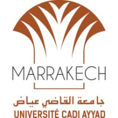
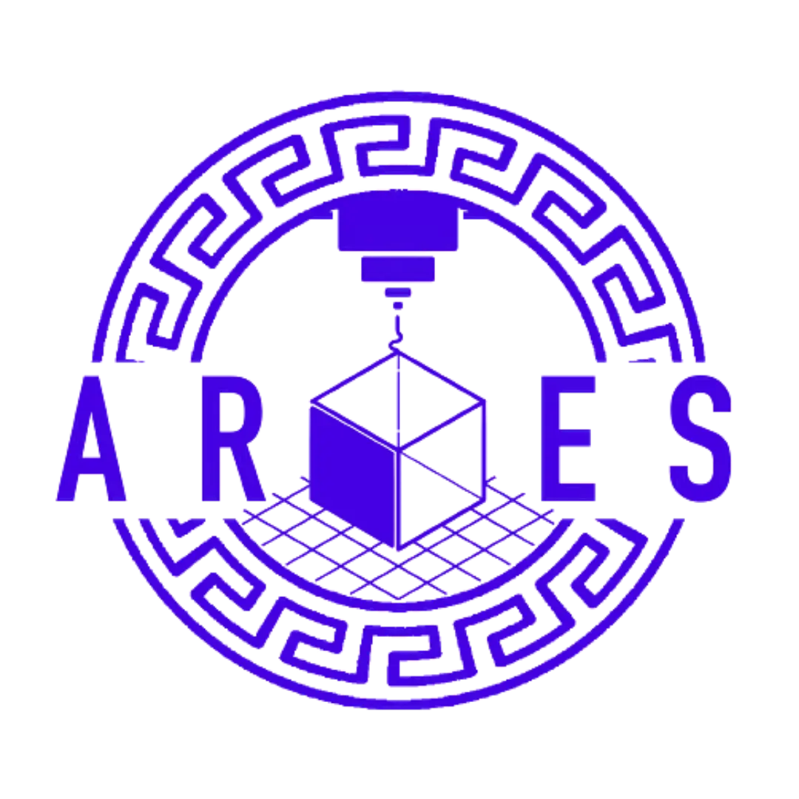

Reda Bennani
Ingénieur spécialisé en Systèmes Industriels et Intelligence Artificielle. Passionné par la technologie, les affaires et l'apprentissage continu.
üëâ redabennanik@gmail.com
Compétences et Certifications
Hard Skills
- Excel et Pack Office
- Python et C++
- Canva
- Html et Css
- IA et Ingénierie Prompt
- Apprentissage Automatique
Soft Skills
- Adaptabilité et Autonomie
- Travail d'équipe
- Résolution de problèmes
- Extraversion
- Leadership
- Gestion du stress
Certifications
- TOEFL 102/120
- Yellow Belt Lean Six Sigma
- Green Belt Lean Six Sigma
Formation
- Université du Comté de Baltimore Maryland USA, Étudiant en Échange - IA et Systèmes d'Information (2023-2024)
-
 Université de Caen, ESIX École d'Ingénieurs, Systèmes Industriels - Usine 4.0 (2021-2023)
Université de Caen, ESIX École d'Ingénieurs, Systèmes Industriels - Usine 4.0 (2021-2023)
-  Université Cadi Ayyad, ENSA Marrakech, Classe Préparatoire (2019-2021)
Expérience Professionnelle
üöß Fondateur | ARES : Bureau d'√âtudes d'Ing√©nierie

Septembre 2023 - Présent
- Fondé ARES, une entreprise qui met en relation les entreprises avec les étudiants à travers des projets d'ingénierie.
- Dirige et gère les opérations quotidiennes et les processus d'une organisation de cinq personnes. Projets ARES :
- Supervisé la production d'équipements spécialisés pour la cafétéria de l'ESIX, améliorant ainsi la durabilité.
- Mené des projets d'intégration de l'IA pour optimiser les processus des PME, améliorant considérablement l'efficacité.
- Développé des sites web personnalisés pour améliorer la présence en ligne et l'engagement des clients.
üöß Propri√©taire | Boutique en ligne
Janvier 2022 - Septembre 2023
- Mise en place de stratégies de marketing numérique ciblées, garantissant un taux de conversion de 3%.
- Gestion des stocks et de la logistique, garantissant une livraison rapide et la satisfaction des clients.
- Développement d'un site web personnalisé avec un design responsive et une navigation conviviale.
üöß Stagiaire | FERRE STUDIO (Vente de v√™tements)
Juin 2023 - Août 2023
- Service client, améliorant la satisfaction des clients et gérant efficacement les stocks.
- Aidé au développement d'un nouveau système de gestion des stocks, réduisant les pertes.
Expérience Extra-Scolaire
üèÜ Gagnant, Concours d'Entrepreneuriat Cangialosi, USA
Janvier 2024 - Juin 2024
- Développé un plan d'affaires pour une application web basée sur l'IA, remportant 2k lors de la compétition.
- Réalisé des études de marché et analysé les exigences technologiques pour l'application web.
üèÜ Pr√©sident, Conseil des √âtudiants (BDE), ESIX
Décembre 2022 - Février 2023
- Organisation et gestion d'événements pour promouvoir le conseil, et gestion d'une équipe de 7 personnes.

Fondateur, Marrakech MEGA Event Club
Septembre 2021 - Juin 2022